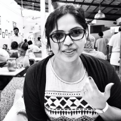
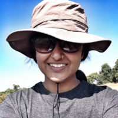
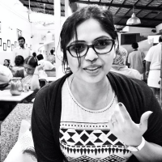
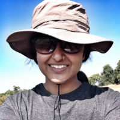

We launched Karma Tips , a little over a year ago. We are a team of three people Vedobroto Roy , Chetana Roy and Archna Prasad who run Prasadam Paper Industries. Prasadam in our language, is a holy offering from god. I am a writer, by profession. My wife Chetana, is an artist, sculptor and a nature lover. Archna Prasad, is a technology wiz and an acute trouble-shooter (and a cute one too!).We are all Indians , by birth. The idea for Karma Tups came after a briefing session at a Big Tobacco company (client of the advertising agency I worked for) in Bangladesh. Though it is one of the most popular brand of cigarettes in the world, we were surprised to find that none of our clients smoked even though they worked for a Big Tobacco.They explained, that apart from being the most addictive substance on the planet , it was also an environmental menace.
 


